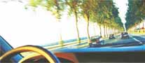

Hea Kolleeg
Meie ühine soov on oma organisatsiooni pidevalt arendada selleks et kindlustada parim töökeskkond nii et suudaksime saavutada koos üles seatud eesmärke. Statoili väärtushinnangutes on selgelt öeldud, et meie organisatsiooni juhid peavad alati olema eeskujuks ja edendama meeskonna vaimu.
Organisatsiooni saavutused peegelduvad meie juhtide käitumisest erinevates olukordades.
Selleks, et meie kui juhid saaksid oma rolli paremini täita ja arendada on vaja Sinu siirast tagasisidet.
Käesoleva küsimustiku täitmine võtab kauem aega kui tavaline küsimustik. Aga see polegi tavaline - lisaks hinnangule ootame Sinu selgitusi ja konkreetseid soovitusi selle kohta, kuidas oleks arukas oma käitumist muuta ja milline käitumine on juba väga hea.
Ette tänades
Epp
Epp